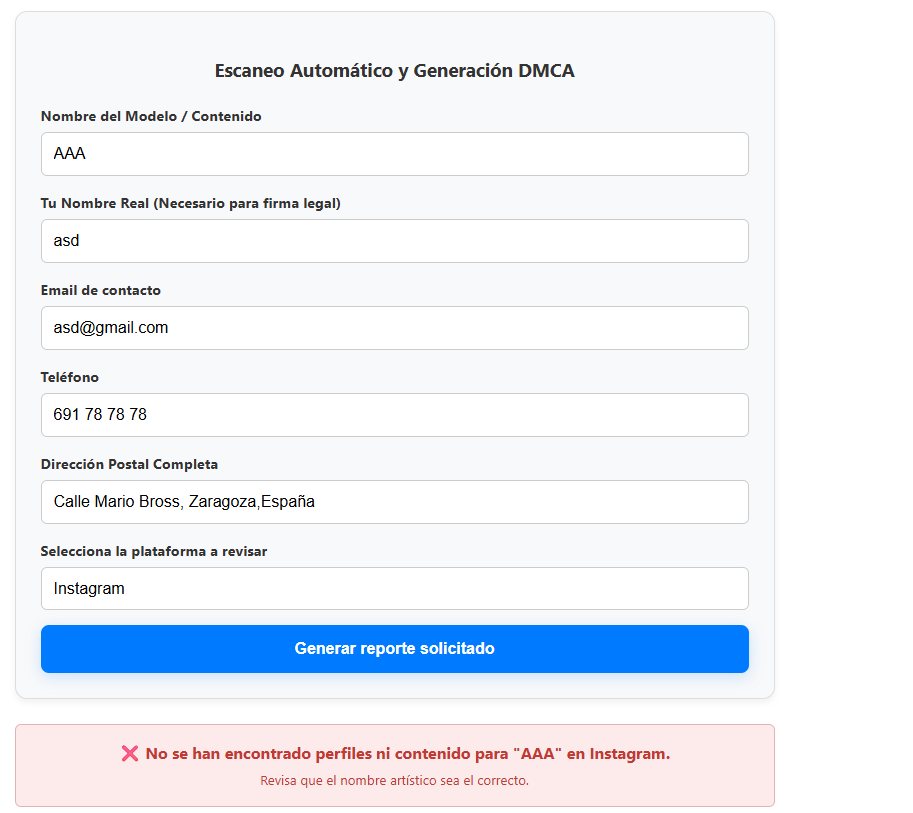
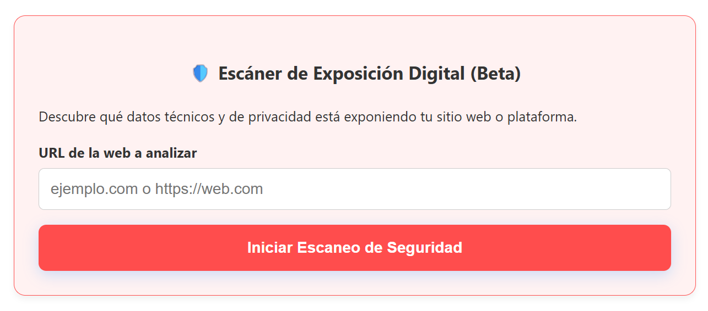

Samuel Fuertes Salas
Especialista en Ciberseguridad | Backend Developer
Desarrollador Backend con fuerte enfoque en Ciberseguridad Defensiva. Especializado en la optimización de infraestructuras críticas y el endurecimiento (hardening) de CMS como WordPress y Drupal. Mi metodología se basa en el Bootstrapping: soluciones robustas, seguras y de alto rendimiento con el mínimo consumo de recursos.

Proyectos Principales

SaaS de Privacidad Digital
Plataforma automatizada para la eliminación de rastro digital y gestión de denuncias DMCA. Incluye un ecosistema de pagos con Stripe, automatización de notificaciones transaccionales vía Brevo API e indexación optimizada en Google Search Console.

Escáner de Reconocimiento Pasivo (OSINT)
Herramienta de auditoría técnica que identifica fugas de información sin interactuar agresivamente con el objetivo. Detecta CMS obsoletos (Drupal 7), directorios críticos expuestos (/.git/) y trackers de privacidad mediante análisis de cabeceras y streaming de bytes.

Auditoría de Vulnerabilidades & Hardening
Análisis de seguridad real sobre entornos WordPress/Plesk. Identificación de fugas de información críticas (API REST), extracción automatizada de identidades y diseño de un plan de mitigación técnica mediante filtros en PHP y endurecimiento de servidor LiteSpeed.

Ecosistema de Desarrollo Drupal 11
Despliegue de un entorno profesional de CMS bajo contenedores. He desarrollado un Theme propio desde cero implementando lógica de plantillas Twig, estructuras de contenido complejas con Views y optimización de carga mediante Video Backgrounds nativos y gestión de activos eficiente.

Modernización & Optimización Integral del Portal web AST.
Durante mi etapa asumí la responsabilidad técnica íntegra de la actualización del sitio corporativo. Actuando como único desarrollador del proyecto, gestioné de forma autónoma desde la optimización del rendimiento hasta la implementación de mejoras de SEO y rediseño de secciones críticas.

Pokexcel - Android App
Desarrollé una aplicación de Pokemon para poder mantener ordenadas mis colecciones pokemon, además de tener un albúm virtual el cual te permite ver las caltas faltantes pertenecientes a esa colección, editar esas colecciones y exportarlas.
Habilidades Técnicas
Drupal Skills
- Twig & Engine
- Taxonomías & Themes Hijos
- Versiones utilizadas de drupal 7, 10 y 11
- Creación de Web en instituciones Públicas.
- Creación de Tiendas Online
Backend & CMS
- PHP / Java / Kotlin
- Scripts Python
- Drupal / WordPress
- SEO Técnico
Ciberseguridad Defensiva
- Hardening CMS (WP/Drupal)
- Reconocimiento OSINT
- Mitigación de Fingerprinting
- Cumplimiento GDPR/DMCA
Backend & Scripting
- Python (Flask/Automations)
- PHP (Módulos a medida)
- Playwright / Selenium
- Bash Scripting (WSL)
Infraestructura & B.D.
- Docker (Aislamiento)
- MariaDB / SQLAlchemy
- Servidores RADIUS
- Optimización de Recursos
Soft Skills & ROI
- Resolución de Fallos Críticos
- Enfoque en Resultados
- Gestión bajo Presión
- Mentalidad Bootstrapping
Trayectoria Profesional
Especialista en Hardening y CTO | Proyectos Independientes
Auditoría de infraestructura web y despliegue de soluciones SaaS seguras:
- Hardening de Servidores: Configuración de entornos Plesk/LiteSpeed para ocultar firmas tecnológicas y unificar mensajes de error.
- Auditoría de Información: Identificación y bloqueo de endpoints sensibles para evitar la extracción automatizada de datos.
- Arquitectura Eficiente: Despliegue de micro-servicios en Docker optimizados para alto rendimiento en hardware limitado.
Fullstack Developer | Proyectos Propios en Drupal 11
Desarrollo y despliegue de soluciones web integrales con enfoque en la eficiencia técnica:
- Virtualización y DevOps: Despliegue de entornos mediante Docker utilizando contenedores independientes para Drupal y MariaDB, asegurando aislamiento y escalabilidad del sistema.
- Desarrollo de Software: Programación de módulos personalizados en PHP para la gestión dinámica de estilos CSS y la automatización de funcionalidades específicas del CMS.
- Administración de Datos: Gestión avanzada de bases de datos MariaDB, incluyendo el diseño de estructuras de tablas y la ejecución de políticas de seguridad y copias de seguridad.
Web Developer / Backend | Aragonesa de Servicios Telemáticos (AST)
Mantenimiento y evolución de la infraestructura web para la administración pública de Aragón:
- Arquitectura de Contenidos: Configuración avanzada de tipos de contenido, campos personalizados, taxonomías y creación de estructuras visuales complejas mediante Views y Blocks.
- Desarrollo de Funcionalidades: Implementación de soluciones a medida mediante PHP y gestión avanzada de formularios corporativos mediante el uso de Webform.
- Soporte y Mantenimiento: Resolución de incidencias técnicas, actualización de contenidos críticos y colaboración directa con departamentos internos como Recursos Humanos.
Responsable de Logística y Operativa | Comercial | Sector Industrial y Eventos | Mozo de Almacén | Carretillero de materiales peligrosos | Administrativo | Repartidor
Liderazgo de equipos y gestión de sistemas complejos en entornos de alta responsabilidad:
- Gestión de Grandes Eventos: Jefe de barra y responsable logístico en festivales de escala nacional (Sonorama, MadCool, Fiestas del Pilar), coordinando recursos y personal bajo alta presión.
- Optimización de Sistemas (OC): Formación oficial como Operario Corrector en Mercadona para la resolución de fallos críticos en sistemas PPG y supervisión de la entrada de material.
- Control Administrativo Industrial: Gestión integral del ciclo logístico mediante el uso avanzado de SAP para la creación de albaranes, entradas de mercancía y control de stock.
- Repartidor/Comercial/Administrativo: Empresa familiar dedicada a la distribución y venta de conservas vegetales y de pescado.